Code calibration¶
Introduction¶
We consider a computer model  (i.e. a deterministic function)
to calibrate:
(i.e. a deterministic function)
to calibrate:
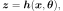
where
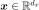 is the input vector;
 is the output vector;
is the output vector; are the unknown parameters of
to calibrate.
are the unknown parameters of
to calibrate.
Let 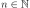 be the number of observations. The standard hypothesis of the probabilistic calibration is:
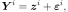
for 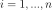 where  is a random measurement error such that:
is a random measurement error such that:
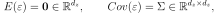
where  is the error covariance matrix.
is the error covariance matrix.
The goal of calibration is to estimate  , based on
observations of
, based on
observations of  inputs
inputs  and the associated observations of the output
and the associated observations of the output
 .
In other words, the calibration process reduces the discrepancy between
the observations and the
predictions 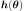.
Given that are realizations of a
random variable, the estimate of , denoted by
.
In other words, the calibration process reduces the discrepancy between
the observations and the
predictions 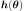.
Given that are realizations of a
random variable, the estimate of , denoted by
 , is also a random variable.
Hence, the secondary goal of calibration is to estimate the distribution of
representing the uncertainty of the calibration
process.
, is also a random variable.
Hence, the secondary goal of calibration is to estimate the distribution of
representing the uncertainty of the calibration
process.
The standard observation model makes the hypothesis that the covariance matrix of the error is diagonal, i.e.
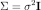
where 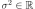 is the constant observation error variance.
In the remaining of this section, the input  is not involved
anymore in the equations.
This is why we simplify the equation into:
is not involved
anymore in the equations.
This is why we simplify the equation into:
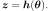
Least squares¶
The residuals is the difference between the observations and the predictions:
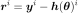
for .
The method of least squares minimizes the square of the euclidian norm
of the residuals.
This is why the least squares method is based on the cost function  defined by:
defined by:
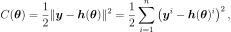
for any .
The least squares method minimizes the cost function :
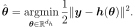
The unbiased estimator of the variance is:
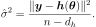
Notice that the previous estimator is not the maximum likelihood estimator (which is biased).
Linear least squares¶
In the particular case where the deterministic function is linear
with respect to the parameter , then the method
reduces to the linear least squares.
Let 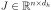 be the Jacobian matrix made of the
partial derivatives of with respect to :
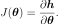
Let 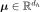 be a reference value of the parameter .
Let us denote by 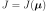 the value of the Jacobian at the reference point  .
Since the function is, by hypothesis, linear, the Jacobian is independent of the
point where it is evaluated.
Since is linear, it is equal to its Taylor expansion:
.
Since the function is, by hypothesis, linear, the Jacobian is independent of the
point where it is evaluated.
Since is linear, it is equal to its Taylor expansion:
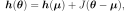
for any .
The corresponding linear least squares problem is:
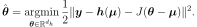
The Gauss-Markov theorem applied to this problem states that the solution is:
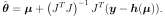
The previous equations are the normal equations. Notice, however, that the previous linear system of equations is not implemented as is, i.e. we generally do not compute and invert the Gram matrix 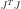. Alternatively, various orthogonalization methods such as the QR or the SVD decomposition can be used to solve the linear least squares problem so that potential ill-conditioning of the normal equations is mitigated.
This estimator can be proved to be the best linear unbiased estimator, the BLUE, that is, among the unbiased linear estimators, it is the one which minimizes the variance of the estimator.
Assume that the random observations are gaussian:
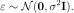
Therefore, the distribution of is:
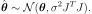
Non Linear Least squares¶
In the general case where the function is non linear
with respect to the parameter , then the resolution
involves a non linear least squares optimization algorithm.
Instead of directly minimizing the squared euclidian norm of the residuals,
most implementations rely on the residual vector, which lead to an improved accuracy.
The difficulty in the nonlinear least squares is that, compared to the
linear situation, the theory does not provide the distribution
of anymore.
There are two practical solutions to overcome this limitation.
bootstrap,
linearization.
The bootstrap method is based on the following
experiment.
Provided that we can generate a set of input and output observations,
we can compute the corresponding value of the parameter .
Reproducing this sampling experiment a large number of times would allow
to get the distribution of the estimated parameter .
In practice, we only have one single sample of observations.
If this sample is large enough and correctly represents the variability
of the observations, the bootstrap method allows one to generate
observations resamples, which, in turn, allow to get a sample of
.
An approximate distribution of can then be computed
based on kernel smoothing, for example.
In order to get a relatively accurate distribution of , the
bootstrap sample size must be large enough.
Hence, this method requires to solve a number of optimization problems, which can be
time consuming.
Alternatively, we can linearize the function
in the neighborhood of the solution and use the
gaussian distribution associated with the linear least squares.
This method is efficient, but only accurate when the function
is approximately linear with respect to in the
neighborhood of .
Least squares and minimization of likelihood¶
A link between the method of least squares and the method of maximum
likelihood can be done provided that two hypotheses are satisfied.
The first hypothesis is that the random output observations  are independent.
The second hypothesis is that the random measurement error
are independent.
The second hypothesis is that the random measurement error  has the gaussian distribution.
In this particular case, it can be shown that the solution of the least squares
problem maximizes the likelihood.
has the gaussian distribution.
In this particular case, it can be shown that the solution of the least squares
problem maximizes the likelihood.
This is the reason why, after a least squares calibration has been performed, the distribution of the residuals may be interesting to analyze. Indeed, if the distribution of the residuals is gaussian and if the outputs are independent, then the least squares estimator is the maximum likelihood estimator, which gives a richer interpretation to the solution.
Regularization and ill-conditioned problems¶
If a problem is ill-conditioned, a small change in the observations can
generate a large change in the estimate .
Hence, for problems which are ill-conditioned, calibration methods may include
some regularization features.
An ill-conditioned problem may appear in the particular case where the
Jacobian matrix 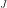 is rank-degenerate.
For example, suppose that a linear least squares problem is considered,
where some linear combinations of the columns of are linearly dependent.
This implies that there is a linear subspace of the parameter space
such that linear combinations of the parameters do not have any
impact on the output.
In this case, it is not possible to estimate the projection of the solution on that
particular subspace.
Gaussian calibration is a way of mitigating this situation, by
constraining the solution to be not too far away from a reference solution,
named the prior.
Examples:
References:
Bingham and John M. Fry (2010). Regression, Linear Models in Statistics, Springer Undergraduate Mathematics Series. Springer.
Huet, A. Bouvier, M.A. Poursat, and E. Jolivet (2004). Statistical Tools for Nonlinear Regression, Springer.
Rasmussen and C. K. I. Williams (2006), Gaussian Processes for Machine Learning, The MIT Press.